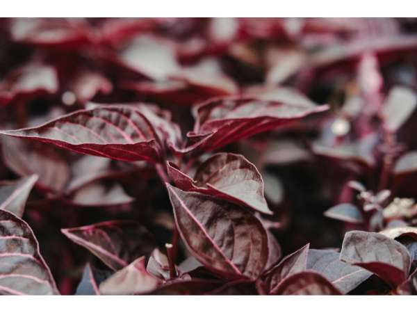

Alternanthera sessilis
Common Names: Red Sessile Joyweed, Dwarf Copperleaf, Joyweed
Local Name: Ponnanganni Keerai (Tamil), Mukunuwenna (Sinhala), Gudrisag (Hindi)
Family: Amaranthaceae
Origin: Pantropical — Asia, Africa, Americas
Plant Type: Perennial creeping herb
Average Lifespan: Perennial; regrows after harvest
| Growth Habit | Prostrate to ascending creeping herb; roots at nodes |
| Plant Size | 10–50 cm tall; spreads laterally |
| Leaves | Opposite, oblong to lanceolate, 2–7 cm long; red-purple tinged in the red variety; succulent texture |
| Flowers | Tiny, white, clustered in axillary heads; inconspicuous |
| Root System | Shallow fibrous roots; adventitious roots form at stem nodes |
| Climate | Tropical and subtropical; thrives in warm humid conditions |
| Temperature Range | 20–35°C; frost-sensitive |
| Rainfall Requirement | 800–2000 mm; tolerates waterlogged conditions near water bodies |
| Soil Type | Moist, fertile loamy soil; tolerates clay and waterlogged soils |
| Soil pH Preference | 5.5–7.5 |
| Sun Requirement | Full sun to partial shade |
| Spacing | 15–20 cm between plants; spreads to fill gaps |
| Irrigation Method | Regular watering; keep soil consistently moist |
| Water Requirement | Moderate to high; does not tolerate drought |
| Can it Grow in Pots? | Yes, in medium containers with regular watering |
| Fertilizer Schedule | Monthly with nitrogen-rich organic fertilizer to promote leafy growth |
| Recommended Organic Fertilizers | Compost, vermicompost, cow dung slurry |
| Mulching Practice | Light mulch to retain moisture; plant itself acts as ground cover |
| Pruning Time | Harvest regularly by cutting stems; promotes fresh bushy regrowth |
| How to Prune | Cut stems 5–10 cm above ground; new shoots emerge within days |
| Common Pests | Aphids, leaf miners; generally pest-resistant |
| Common Diseases | Fungal leaf spot in overcrowded conditions |
| Disease Prevention & Remedies | Good air circulation; avoid overcrowding; regular harvesting prevents disease buildup |
| Propagation by Cuttings | Stem cuttings root easily in moist soil within 1–2 weeks; most common method |
| Propagation by Seeds | Seeds germinate readily; self-seeds prolifically in moist conditions |
| Water Usage | Moderate; excellent for wet garden areas and pond margins |
| Soil Conservation Practices | Dense ground cover prevents soil erosion; stabilizes moist banks |
| Biodiversity Benefits | Provides ground cover habitat; flowers attract small insects |
| Commercial Production Regions | Tamil Nadu, Kerala, Karnataka, Sri Lanka, Southeast Asia |
| Market Uses | Fresh greens for cooking, traditional medicine, Ayurvedic preparations |
| Market Value (Approx.) | ₹20–50 per bunch in local markets |
| Symbolism | Revered in Tamil culture as "Ponnanganni" — believed to enhance eyesight and complexion |
| Traditional Uses | Cooked as stir-fry (poriyal) or added to rice dishes; used in Siddha medicine for eye health and skin conditions |
| Calories | ~30 kcal per 100g |
| Dietary Fiber | 2.5 g per 100g |
| Vitamin C | Moderate; supports immune function |
| Vitamin A | High; important for eye health |
| Iron | Good source; beneficial for anaemia prevention |
| Other Key Nutrients | Calcium, phosphorus, antioxidants, chlorophyll |
| Immune Support | Rich in antioxidants; traditionally used to boost immunity and vitality |
| Anti-inflammatory Properties | Used in Siddha medicine for inflammation and skin disorders |
| Digestive Health | Leaf decoction used for digestive complaints and liver health |
| Heart Health | Traditional use for improving blood quality and circulation |
Disclaimer: Information provided is for educational purposes only and not a substitute for medical advice.
Add your field observations here.